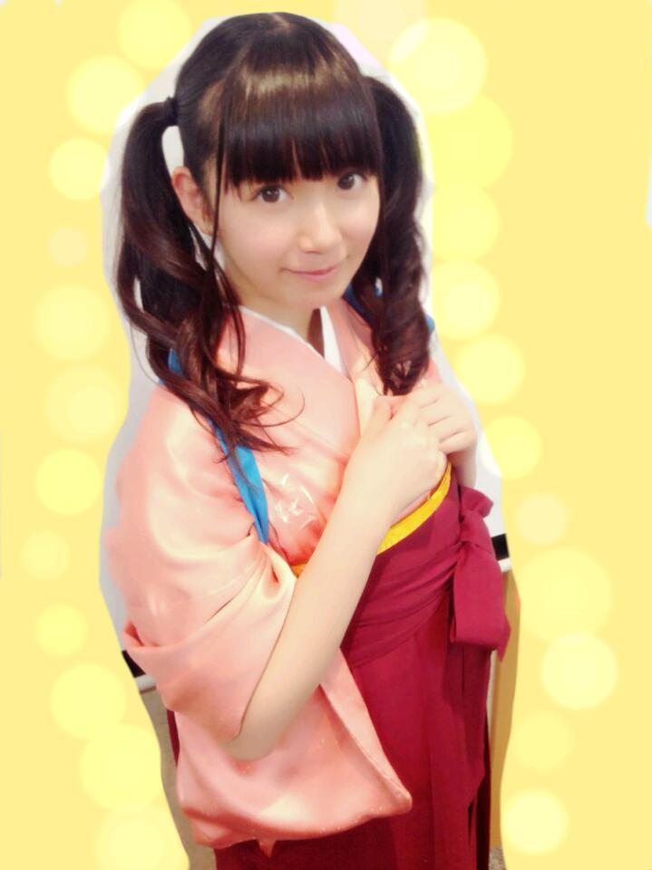
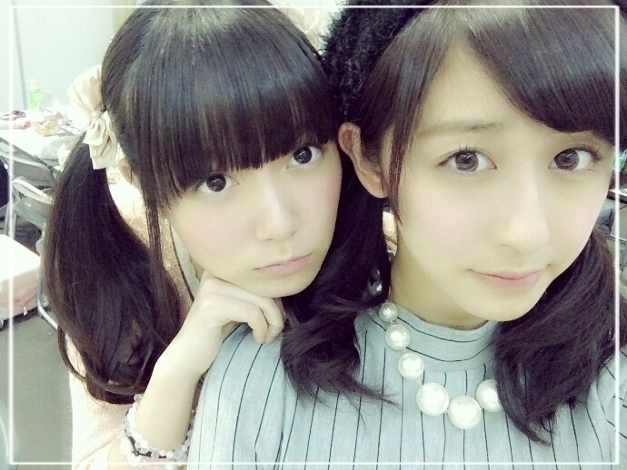

| 2014/09 25 Thu | ひめたん-OoO-その482 |

新制服ブレザーありver.
りぼんの子と
なんちゃらかんちゃらの子がいます
あれ何て名前なんだろ＼(^o^)／
おとといは
CD特典イベントお茶会
トレカ特典イベントカルタ大会が
ありました！
来てくださったみなさん
ありがとうございました(＊^ω^＊)
なんか、どうだったかな～
楽しんでもらえたかな？
少人数のイベントということで
参加したみなさんは楽しい思い出を
一緒に作れたなら嬉しい\❁/
今回は外れちゃったよ～ってひとは
ぜひ次回は一緒に参加したいな。
あのね、ひとついうとね
本当に近いんですよー(,,>ω<,,)
こんなにひとりひとりのお顔見て
わっきゃわっきゃするイベントって
なかなかないかなーなんて思ったり
きゅんきゅん王国民さんに限らず
同じメンバーを応援する者同士
仲良くなるきっかけになったらすてきだよね
あ、そうそう
お留守番ちーむのみなさんに
ひとつ報告しなきゃなのが
カルタ大会では袴を着たのー( ˙Ο˙ )♡

人生初の袴～ぴんく～
次回のイベントは
今週末の幕張握手会2days！
遊びに行くよってみなさん
よろしくお願いします(＊^ω^＊)
楽しい握手会になるといいな～
全国握手会は
あすかりん、さゆと16レーン∩(・ω・)∩
わーなんと居心地のよいレーン！
いつも仲良しのふたりとなんて
楽しそうなレーンだな～
飛鳥軍団(仮)のみなさん
サユリストのみなさん
ひめたんとも仲良くしてくださいな♡
きゅんきゅん王国のみなさんも
もちろん待ってるよ！

そして のぎ天！
前回は精進料理と写仏をしました～
もう観てくれたかな？
精進料理はどうも苦手みたいです
ねばねばがもうだめなんよね
オクラとか納豆も......うう
写仏は住職さんに
誉めていただきました＼(^o^)／
でももっときれいにできたような気もする
最後に
前回は本当にたくさんのコメント
ありがとうございました(´；_；｀)
こんなとこでする話でもないけど
なんのこっちゃーってひともいるから
ちょっとだけ説明するね
あのね、
めーるでちょっとだけ
暗いこと言っちゃったの
それだけなんだけど
普段あまり暗いめーるしないから
心配かけちゃったみたい(´・ω・｀)
気を遣わせちゃってごめんね
心配してくれてありがとう！
みなさんからたくさんの
あたたかいメッセージが届いて
ひとつひとつ読みました！
改めて支えられてるんだって
コメント読みながら実感しました
本当にありがとうございました(´；_；｀)
いつも支えてもらってばかりで申し訳ない。
もっと強くならなきゃだめだね～
次の握手会までにはきっと
100%元気なひめたんに
なってると思います！
だからもう何も心配しないで
これからもいつも通り
あたたかく応援していてください♡

 ひめたんは飴を舐めてる時に途中で
ひめたんは飴を舐めてる時に途中で
噛んじゃう派？
それとも、最後まで舐める派？
噛んじゃう派～
あめちゃんあんまり食べてないな(´・ω・｀)
お花の味のあめちゃん好きだったよ
自分まりかとひめたん推しなんですけど
2人のコンビ名的なもの
ってあったりしますか？
なかいさんって呼んでるよ
中元さんと伊藤さんでなかいさん

ひめたんの日記の
コメント欄下２ケタに46を踏んだ方へ
手書きでコメ返するコーナー
＼ ひめたん46 ／

いつもたくさんのコメント
ありがとうございます
27日の開運音楽堂
みさせんぱいのコーナーに
ひめたん登場するよー♪
SamuraiELOさんに
撮影していただきました！
発売日近くなったらまた告知します～
(＊´・ω・＊)
コメント(882)
2014/09/25 23:36